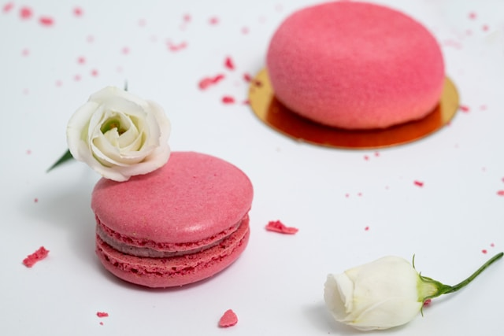
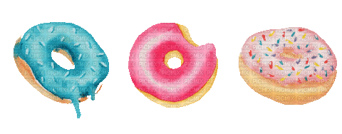
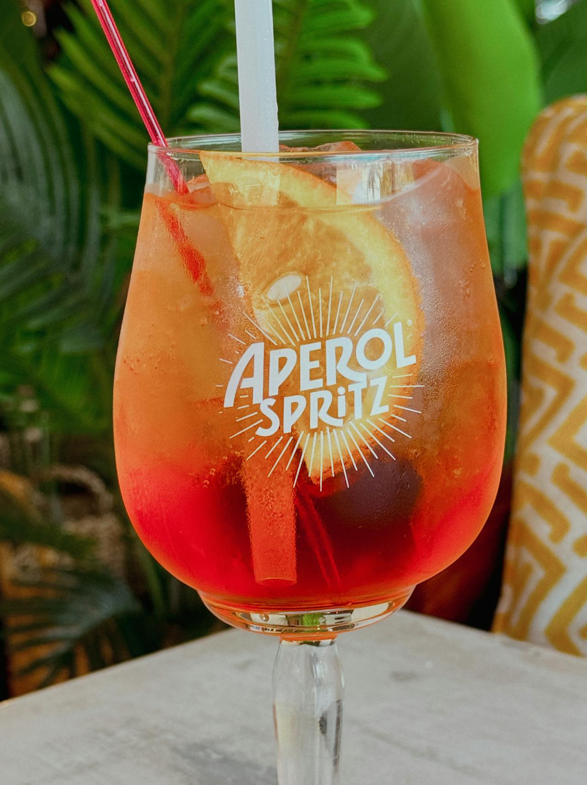
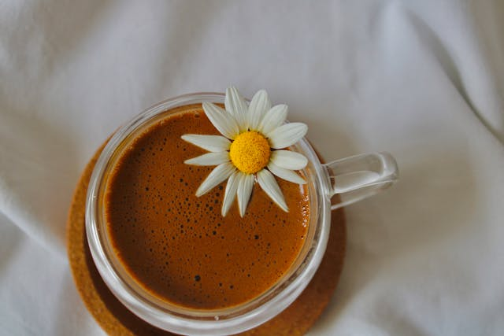
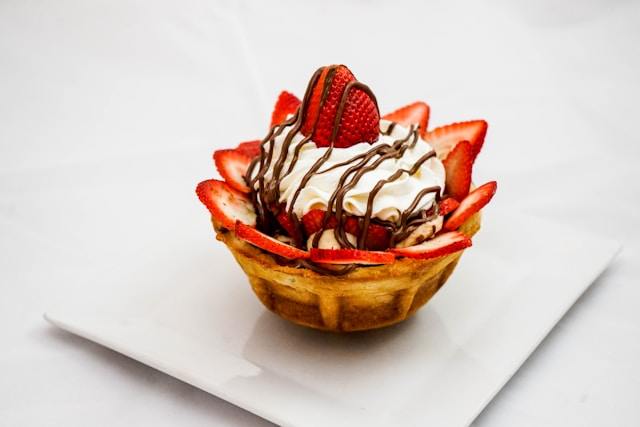

Macarrón
El Macarrón llegó a Francia en el Renacimiento: aunque existen diversas teorías. La más replicada sostiene que la reina Catalina de Médici ordenó ofrecer Macarons a los invitados de la boda del Duque de Joyeuse. El objetivo era sofisticar el recetario de los banquetes servidos en los palacios renacentistas. La popularidad y el gran alcance que los Macarons tuvieron posteriormente se debió en principio al salón de té Pons, ubicado en el Barrio Latino de París, el cual ya no existe.Luego, la lujosa casa de pastelería y repostería Maison Ladurée comenzó a elaborarlos en la gama de colores pasteles para diferenciar su sabor. Actualmente, Ladurée vende 15.000 unidades por día.
DÍA MUNDIAL DE LA REPOSTERÍA
En realidad el Día Mundial de la Repostería no tiene una fecha fija, se festeja cada tercer domingo de mayo. Su propósito principal es el brindar reconocimiento y honrar tanto a la repostería como a quienes la practican alrededor del mundo. Esto se puede lograr a través de la preparación de pasteles o postres para disfrutar en el hogar, o para regalar a los seres queridos. También es importante conocer sus orígenes para entender su importancia cultural.Su historia se remonta a tiempos antiguos, donde civilizaciones como los egipcios y los romanos ya elaboraban diversos tipos de postres utilizando miel, frutas y frutos secos. Con el paso del tiempo, evolucionó y se expandió por todo el mundo. Además, fue influenciada por las diferentes culturas y sus tradiciones culinarias que le aportaron sabores y técnicas únicas.
¿Cuál es la historia y el origen de las donas?
Las donas o donuts son una de las golosinas más famosas a nivel mundial. Actualmente existen miles de formas, sabores y cubiertas para estas pequeñas ruedas de masa cuyo sabor es único y espectacular. Sin embargo, su origen se remonta a unos cientos de años atrás. El nacimiento de esta perfecta creación se remonta a cuando los holandeses emigraron a América y se llevaron consigo varias tradiciones. Una de esas tradiciones fue el famoso olykoeks, oil cake en inglés. Estos eran unos bollos de masa que freían en aceite y se usaban para acompañar a los alimentos principales.Actualmente existen compañías como Krispy Kreme y Dunkin Donuts que encabezan el mundo de las donas en Estados Unidos. Este es un producto en crecimiento, con diferentes toppings, rellenos y colores que es consumido en grandes cantidades a nivel mundial.
Imagen Background
El limón amarillo es un ingrediente muy popular en la repostería debido a su sabor refrescante y equilibrado, que combina perfectamente con la dulzura de muchos postres. Su acidez suave no solo realza el sabor de otros ingredientes, sino que también actúa como un equilibrante natural, evitando que los postres sean demasiado empalagosos. Además, se puede utilizar de diversas maneras: su jugo aporta frescura, mientras que la ralladura de su cáscara añade un aroma intenso y aceites esenciales que enriquecen el perfil de sabor. La versatilidad del limón amarillo permite su uso en una amplia gama de postres, desde tartas y cheesecakes hasta galletas y mousses, donde incluso contribuye a mejorar la textura, estabilizando claras de huevo en merengues o gelatinas. Su atractivo color amarillo brillante también lo convierte en un elemento visualmente atractivo que embellece los platillos. En resumen, su capacidad para combinar sabores, su versatilidad en la cocina y su atractivo estético son razones clave por las que el limón amarillo es tan utilizado en la elaboración de postres.
AL ESTILO ITALIANO
El Aperol es una bebida alcohólica de origen italiano de baja graduación alcohólica, sus ingredientes incluyen naranja amarga, ruibarbo, gentiana, cinchona, entre otros. Aunque sabe y huele muy similar al Campari, el Aperol tiene una graduación alcohólica de 11%.El origen de este licor se remonta a 1919, año en el cual fue creado por los hermanos Barbieri pero sólo se volvió popular después de la Segunda Guerra Mundial. Actualmente este cóctel es producido por el Grupo Campari.
Durante varios años, su consumo apenas traspasó las fronteras de la región en la que se creó. En la actualidad, se puede encontrar en los bares de países como Reino Unido, Francia, España, Estados Unidos o Australia. En Latinoamérica, se ha vuelto popular en Argentina, Brasil y Chile. Su éxito actual está ligado al spritz, que viene del alemán spritzen, que significa echar un chorro de agua al vino.
La preparación utiliza una copa de vino llena de hielo con una rodaja de naranja y luego se mezcla el vino espumante. EL Precio del Aperol Spritz generalmente ronda los $10.000 pesos chilenos y a pesar de su valor la gente lo consume con bastante frecuenta principalmente como un trago refrescante para escapar del calor y disfrutar de un buen after hour, comida con amigos, familia o en pareja
 ¿A quién no le gusta el chocolate caliente? Una buena taza de chocolate caliente es la señal perfecta de que el invierno ha llegado. Este alimento es noble con nuestro organismo, sobre todo si hablamos del chocolate amargo, objeto de estudio de numerosas investigaciones. Dentro de sus beneficios destaca la producción de la “hormona de la felicidad”, la serotonina.Siendo un alimento tan amado, hoy te contamos un poco de su historia: El cacao se cultiva desde la antigüedad, se cree que sus orígenes surgen en México, con su cultivo por parte de las civilizaciones que lo cultivaban previo a la llegada de los españoles. Se dice que, el primer chocolate caliente, fue elaborado por los mayas, la primera civilización en preparar una bebida a base de cacao llamada Xocoati. El xocoati era una bebida amarga, hecha con agua, cacao, frijoles y una pizca de pimienta, aún muy lejos de cómo lo consumimos hoy. La bebida era muy especial para los aniversarios y eventos de la sociedad.El BelPaese adoptó la bebida para darle un lugar dentro de los hogares italianos, quienes la conocían como cioccolata. Hoy en día es una de las bebidas favoritas en el invierno, perfecta para disfrutar con los amigos o la familia frente al calor de una chimenea, obteniendo un momento de completa relajación.
Recetas Nestlé
El sitio de recetas de Nestlé es una plataforma en línea donde puedes encontrar una amplia variedad de recetas que utilizan productos de Nestlé. Ofrecen recetas para diferentes comidas, postres y bebidas, con instrucciones claras y consejos de preparación. También puedes encontrar ideas para adaptarlas según tus preferencias o necesidades dietéticas. Además, suelen incluir información sobre los ingredientes y sus beneficios, así como videos y tips para facilitar la cocina. Es un recurso útil tanto para principiantes como para cocineros experimentados.
Imagen con filtro
El uso excesivo de filtros en las imágenes de postres puede tener un impacto significativo en la percepción de los mismos y puede llevar a engañar a los consumidores de varias maneras. En primer lugar, los filtros pueden alterar los colores y las texturas de los postres, haciendo que se vean más vibrantes, brillantes y apetitosos de lo que realmente son. Por ejemplo, un pastel que en la realidad tiene un color ligeramente apagado puede aparecer con colores intensamente saturados, lo que crea expectativas poco realistas sobre su apariencia y frescura..
Además, el uso de filtros puede ocultar imperfecciones que son normales en productos de repostería casera, como pequeñas irregularidades en la cobertura o manchas en la superficie. Esto puede dar la impresión de que el postre ha sido fabricado profesionalmente, lo que puede ser engañoso para los consumidores que buscan productos caseros auténticos. Cuando los clientes compran un postre que no se asemeja a lo que vieron en la imagen, pueden sentirse decepcionados, lo que afecta su satisfacción y confianza en la marca.
